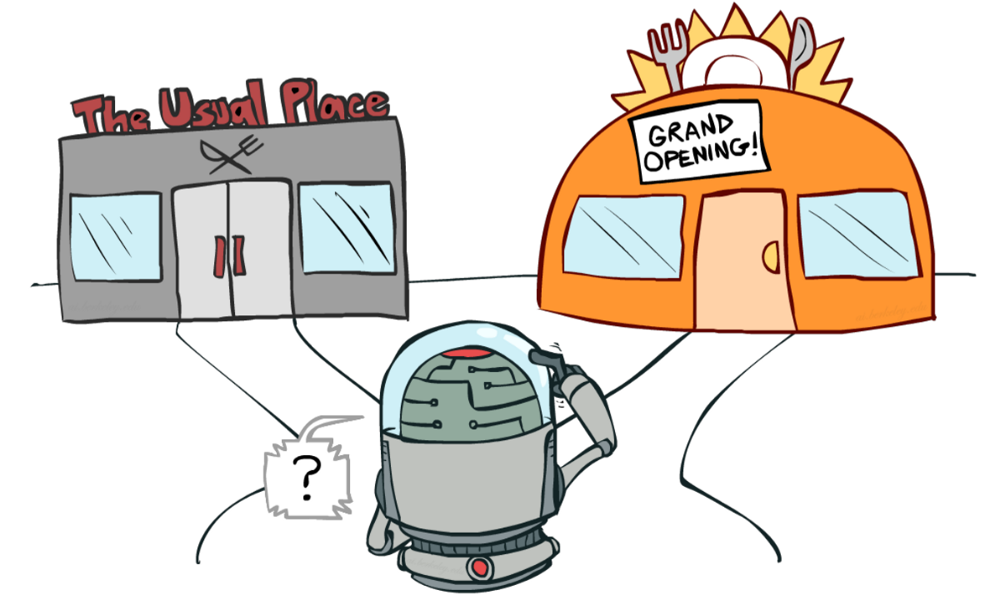

Lecture 5: Distraction
2023-08-31
Lecture 4 CLEAN-UP and REVIEW
Didn’t understand:
The puzzle
Introspection says we experience the entire visual field simultaneously.
Results of experiments find knowledge of what’s in the visual field is very limited, to only several objects 1
- How do we reconcile 1 and 2?
Resolving the puzzle
Ned Block:
We do visually experience the whole visual field simultaneously. Allow me to explain how that’s compatible with the results of the experiments… [writes 550-page book]
“Grand illusion of visual experience” people:
Block, you’re so wrong. But we know you strongly believe you do experience the whole visual field simultaneously. We want to explain why you believe it so strongly, so we’ll posit that there’s a grand illusion of visual experience throughout the visual field. Maybe it’s kinda like the refrigerator light illusion.
The argument relies on having visual experience of the whole visual field entailing that you’d detect major changes to the visual field. 1
But based on our analysis of what change detection involves, it may not entail that.
So that argument for the “grand illusion” is not very good.

Review of the argument, now in essay format in case it helps
The “grand illusion” argument: if we really did experience everything in the scene, we would quickly detect changes to the objects in the scene. So, because we don’t quickly detect many changes to the scene (change blindness), we must not really experience everything.
After hearing the argument, about half of students agreed that our feeling of experiencing everything must be only an illusion.
But the grand illusion argument is actually not a great argument; the first part that says that if we really did experience everything, we would quickly detect changes. Maybe we really do experience everything but we don’t have a comparison process that’s always comparing everything. Or maybe we really do experience everything but we don’t have a representation of the scene a short time ago, so we can’t do the comparison. In other words, the idea that “if we really did experience everything, we would quickly detect changes” may be false.
Lectures 1-4 overview
A bridge between the Perception and Cognition parts of PSYC2016
Our mental architecture is massively-parallel, followed by bottleneck(s)
- Various details, including individual vs. combining features and change blindness
To deal with this architecture, we have:
- Crude salience and alerting mechanisms
- Guidance of attention by memory
This helps explain distractions

Get involved in research!
Talk to me or other academics.
Lectures 1-2 outline
- Why we need selective attention
- Overt attention
- Bottleneck architecture of the visual system necessitates covert attention
- Need for vigilance
- Because of bottleneck, we evolved crude salience and alerting mechanisms
- Kinds of selection
- More on the parallel processing prior to the bottleneck
- Binocular rivalry vs. two separated letters
- Bottom-up attention (Chapters 7 and 9)
- Our behavior is a mish-mash of competition between top-down and bottom-up
- Combinations of features typically aren’t processed in parallel
- Selective attention is needed to combine features
- Feature selection is compulsorily global
- Maybe because What processing (features) occurs on different pathway than Where pathway, which mediates spatial attention
- More on the parallel processing prior to the bottleneck
Lecture 3 outline
- Treisman’s diagram and combining features
- Individual-feature salience is computed in parallel
- Flat search slopes (parallel) vs. steep (serial)
- Combining features from two different objects takes the longest, but even within an object takes awhile (both require focused attention)
- It feels like we see everything at once
- The mysterious non-selective pathway
- Shape - Combining oriented elements into a shape doesn’t require focused attention
- Uses sophisticated cues
- Fast
- Can combine many elements, oaveraging over noise
- Combining that shape with a color does require focused attention
- Change blindness
Lecture 5: DISTRACTION
- I’ve focused on the perception end of the perception - cognition relationship
- Cognition is affected by social, motivational, and environmental factors
What most distracts you during lecture?

Phones!
Our mind becomes like a pinball propelled from lever to lever by text chimes, social media notifications and targeted ads…
Without top-down control of our attention, we open ourselves up to stimuli that steer our attention for us.
- A lot more to it than sensory events and salience
Distractions, categorised
Sensory events: noise, other peoples laptops, dense slides, muscle soreness, phone
Drives: hunger, sleepiness, boys
Cognitive, interest, learning: boring lectures, social media - instagram, phone, tangents, spring break planning, content is too hard or ez
Life issues: issues in my life, other works, other deadlines
Distractions, categorised
Sensory events: noise, other peoples laptops, dense slides, muscle soreness, phone Chapter 5
Drives: hunger, sleepiness, boys. NOT COVERED IN PSYC2016.
Cognitive, interest, learning: boring lectures, social media - instagram, phone, tangents, spring break planning, content is too hard or ez. MANY CHAPTERS MENTION TOP-DOWN, MEMORY, + CHAPTER 16
Life issues: issues in my life, other works, other deadlines. NOT COVERED IN PSYC2016
Ezra Klein on mobile phones
In 1990, imagine I told you that I was going to invent a sinister tool…
As people used it, their attention spans would degrade, as the tool would constantly shift their focus, weakening their powers of concentration and contemplation.
This tool would show people whatever it is they found most difficult to look away from — which would often be what was most threatening about the world, from the worst ideas of their political opponents to the deep injustices of their society.
It would fit in their pockets and glow on their night stands and never truly be quiet; there would never be a moment when people could be free of the sense that the pile of messages and warnings and tasks needed to be checked.
What would you have thought this engine of distraction, division and cognitive fracture would do to humanity?
Learning
Association of stimuli with reward (Chapter 16)
- When you open an app, you get interesting things
- Possibly a social reward
What distracts you during studying?
phone; phone; Phone; Phone; phone; Phone; phone; my phone; cellphone; My phone; buzzing phone; Phone buzzing; My damn phonnneeee :(
My phone, the habit of picking it up all the time
messages/instagram
my boyfriend playing video games right next to me
flat mate coming into my room
The clock
Social media
snacks
vacuumming in the background, remembering random things
My own thoughts
Cans of kombucha being drunk.
my housemates
In 2004, The average time people spent on a single screen was 2.5 minutes.
“I was astounded. That was so much worse than I’d thought it would be,” said Mark.
But that was just the beginning. By 2012, Mark and her colleagues found the average time on a single task was 75 seconds. Now it’s down to about 47.
Multi-tasking
Multitasking? We can only focus on one thing at a time.
Task-switching.
- “It’s like we have an internal whiteboard in our minds,” Mark said.
- “If I’m working on one task, I have all the info I need on that mental whiteboard. Then I switch to email. I have to mentally erase that whiteboard and write all the information I need to do email. And just like on a real whiteboard, there can be a residue in our minds. We may still be thinking of something from three tasks ago.”
When have you been most focused?
Menti.com code: 7353 8682
Cognitive / motivational factors
- When we find something rewarding/worthwhile, ideally we exploit it
- But exploration is also a drive
- The yin to exploitation’s yang
- The explore/exploit trade-off
- Vigilance is more about threats

Exploitation - using known information to get rewards
Exploration - exploring the environment to look for new information/rewards
CONTROLLING BOTTOM-UP SENSORY EVENTS
What do you do to shut out the world?

Molly Worthen on monastic uns
We need an intervention: … a bold move to put the screens, the pinging notifications and the creepy humanoid A.I. chatbots in their proper place. They are our tools, not our masters. That doesn’t mean a futile attempt to wall off higher education from the modern world; it does mean selectively returning to the university’s roots in the monastic schools of medieval Europe and rekindling the old-fashioned quest for meaning.
Colleges should offer a radically low-tech first-year program for students who want to apply: a secular monastery within the modern university, with a curated set of courses that ban glowing rectangles of any kind from the classroom. Students could opt to live in dorms that restrict technology, too.
The first step is dethroning the small silicon idol in their pocket — and making space for the uncomfortable silence and questions that follow. The experience stuck with Ms. Ouyang, the nursing major. “I didn’t look forward to getting my phone back,” she said.
All day, the world makes its demands. There’s so much of it, world
begging to be noticed.
ultrawhelmed sensorium, my self

ultrawhelmed sensorium, my self
taxed with being a self, brimming with living’s rowdy mechanics
and disruptions unremitting,
a thought flits by, then another (an unpaid bill, a jingle’s tenacious refrain)
and, … I attend, as best I can,…
yielding to the most persuasive god, the most recent,
to each thing I say Yes?
Yes!
zealot of whatever calls me next.
Social facilitation